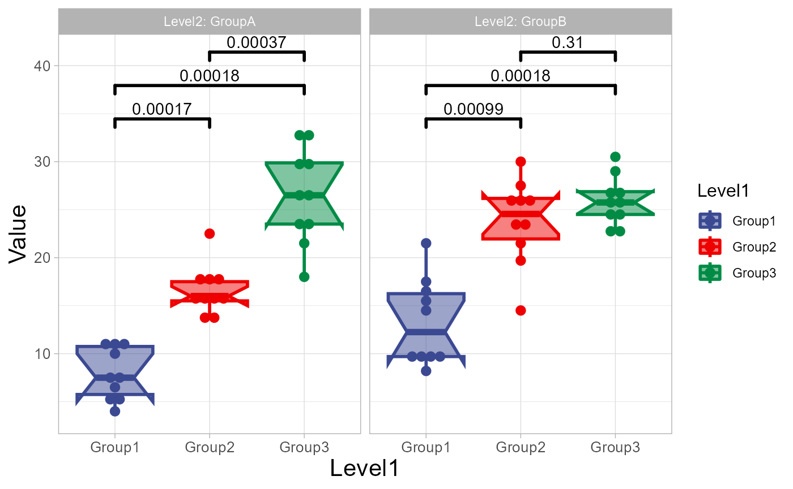
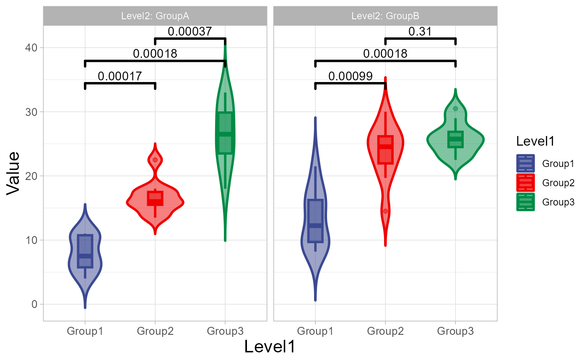
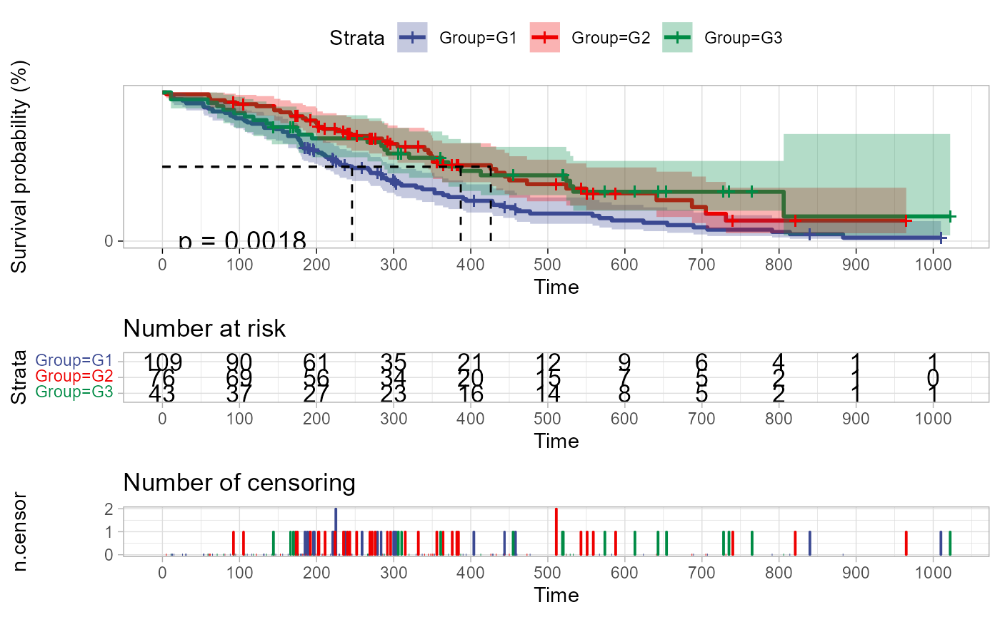
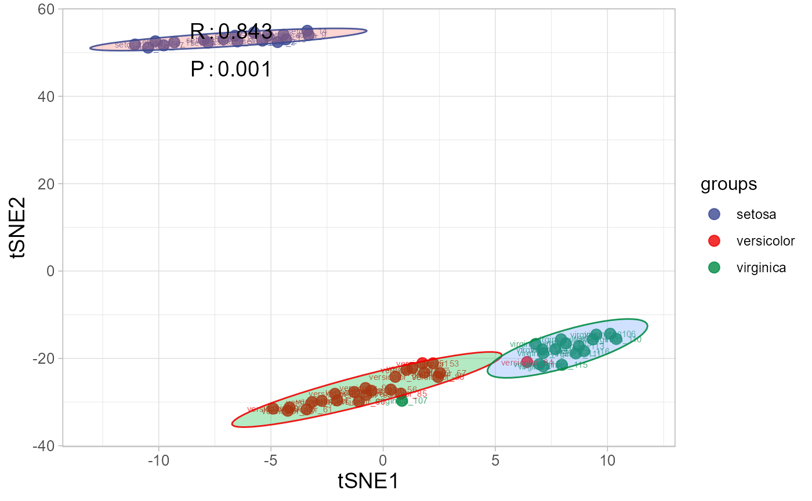

2. Traits Analysis
2.1 box_plot
Box plot support two levels and multiple groups with P value.
library(TOmicsVis)
#> Loading required package: e1071
#>
#> Registered S3 method overwritten by 'GGally':
#> method from
#> +.gg ggplot2
#> Loading required package: Biobase
#> Loading required package: BiocGenerics
#>
#> Attaching package: 'BiocGenerics'
#> The following objects are masked from 'package:stats':
#>
#> IQR, mad, sd, var, xtabs
#> The following objects are masked from 'package:base':
#>
#> anyDuplicated, aperm, append, as.data.frame, basename, cbind,
#> colnames, dirname, do.call, duplicated, eval, evalq, Filter, Find,
#> get, grep, grepl, intersect, is.unsorted, lapply, Map, mapply,
#> match, mget, order, paste, pmax, pmax.int, pmin, pmin.int,
#> Position, rank, rbind, Reduce, rownames, sapply, setdiff, sort,
#> table, tapply, union, unique, unsplit, which.max, which.min
#> Welcome to Bioconductor
#>
#> Vignettes contain introductory material; view with
#> 'browseVignettes()'. To cite Bioconductor, see
#> 'citation("Biobase")', and for packages 'citation("pkgname")'.
#>
#> Attaching package: 'DynDoc'
#> The following object is masked from 'package:BiocGenerics':
#>
#> path
# 1. Load box_data example datasets
data(box_data)
# 2. Run box_plot plot function
box_plot(
box_data,
test_method = "wilcox.test",
test_label = "p.format",
notch = TRUE,
group_level = "Three_Column",
add_element = "dotplot",
my_shape = "fill_circle",
sci_fill_color = "Sci_AAAS",
sci_fill_alpha = 0.5,
sci_color_alpha = 1,
legend_pos = "right",
legend_dir = "vertical",
ggTheme = "theme_light"
)
#> Bin width defaults to 1/30 of the range of the data. Pick better value with
#> `binwidth`.
#> Notch went outside hinges
#> ℹ Do you want `notch = FALSE`?
#> Notch went outside hinges
#> ℹ Do you want `notch = FALSE`?
#> Notch went outside hinges
#> ℹ Do you want `notch = FALSE`?
#> Notch went outside hinges
#> ℹ Do you want `notch = FALSE`?
#> Notch went outside hinges
#> ℹ Do you want `notch = FALSE`?
#> Notch went outside hinges
#> ℹ Do you want `notch = FALSE`?
Get help using command ?TOmicsVis::box_plot or reference
page https://benben-miao.github.io/TOmicsVis/reference/box_plot.html.
# Get help with command in R console.
# ?TOmicsVis::box_plot2.2 violin_plot
Violin plot support two levels and multiple groups with P value.
# 1. Load box_data example datasets
data(box_data)
# 2. Run violin_plot plot function
violin_plot(
box_data,
test_method = "wilcox.test",
test_label = "p.format",
group_level = "Three_Column",
violin_orientation = "vertical",
add_element = "boxplot",
element_alpha = 0.5,
my_shape = "plus_times",
sci_fill_color = "Sci_AAAS",
sci_fill_alpha = 0.5,
sci_color_alpha = 1,
legend_pos = "right",
legend_dir = "vertical",
ggTheme = "theme_light"
)
Get help using command ?TOmicsVis::violin_plot or
reference page https://benben-miao.github.io/TOmicsVis/reference/violin_plot.html.
# Get help with command in R console.
# ?TOmicsVis::violin_plot2.3 survival_plot
Survival plot for analyzing and visualizing survival data.
# 1. Load survival_plot example datasets
data(survival_data)
# 2. Run survival_plot plot function
survival_plot(
survival_data,
curve_function = "pct",
conf_inter = TRUE,
interval_style = "ribbon",
risk_table = TRUE,
num_censor = TRUE,
sci_palette = "aaas",
ggTheme = "theme_light",
x_start = 0,
y_start = 0,
y_end = 100,
x_break = 100,
y_break = 25
)
Get help using command ?TOmicsVis::survival_plot or
reference page https://benben-miao.github.io/TOmicsVis/reference/survival_plot.html.
# Get help with command in R console.
# ?TOmicsVis::survival_plot2.4 tsne_plot
TSNE plot for analyzing and visualizing TSNE algorithm.
# 1. Load tsne_plot example datasets
data(tsne_data)
# 2. Run tsne_plot plot function
tsne_plot(
tsne_data,
point_size = 3,
point_alpha = 0.8,
text_size = 2,
text_alpha = 0.8,
ci_level = 0.95,
ellipse_alpha = 0.3,
sci_fill_color = "Sci_AAAS",
sci_color_alpha = 0.9,
legend_pos = "right",
legend_dir = "vertical",
ggTheme = "theme_light"
)
Get help using command ?TOmicsVis::tsne_plot or
reference page https://benben-miao.github.io/TOmicsVis/reference/tsne_plot.html.
# Get help with command in R console.
# ?TOmicsVis::tsne_plot